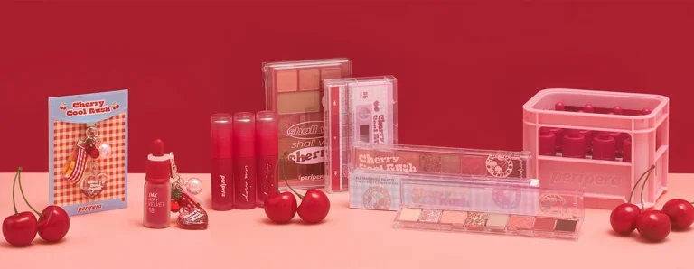

PeriPera
Unlock Your Inner Pretty Pretty
Innovative K-Beauty that brings joy and confidence to your everyday through vibrant colors and unique textures.

Innovative K-Beauty that brings joy and confidence to your everyday through vibrant colors and unique textures.

PeriPera Cosmetics is a fun, trendsetting Korean makeup brand that has gained a cult following for its innovative, high-quality products and fresh, youthful branding. Founded in 2005, PeriPera takes its name from the Korean phrase “peri-pera” meaning “pretty pretty.”
The brand is known for bringing a sense of joy and creativity to makeup. PeriPera’s products feature bold, vibrant colors, unique textures, and whimsical packaging designs inspired by things like fruits, toys, and fashion illustrations. However, beyond the playful aesthetics, their formulas utilize advanced Korean skincare technology and skin-loving ingredients.
Some of PeriPera’s most popular cult products include the Ink Velvet Lip Tints, Velvet Cheek Blushes, and Ink Airy Velvet Lip Tints which provide intense, long-wearing pigment with a velvety finish. They’re also known for fun, innovative makeup like the Peri’s Tint Water lip gelées and Lash Tiny Monster mascaras.
While keeping things playful, PeriPera is also committed to clean, eco-conscious beauty using natural botanicals, avoiding controversial ingredients, and implementing sustainable packaging initiatives. As PeriPera continues to rapidly expand worldwide, it brings a fresh sense of excitement and self-expression to the makeup world.